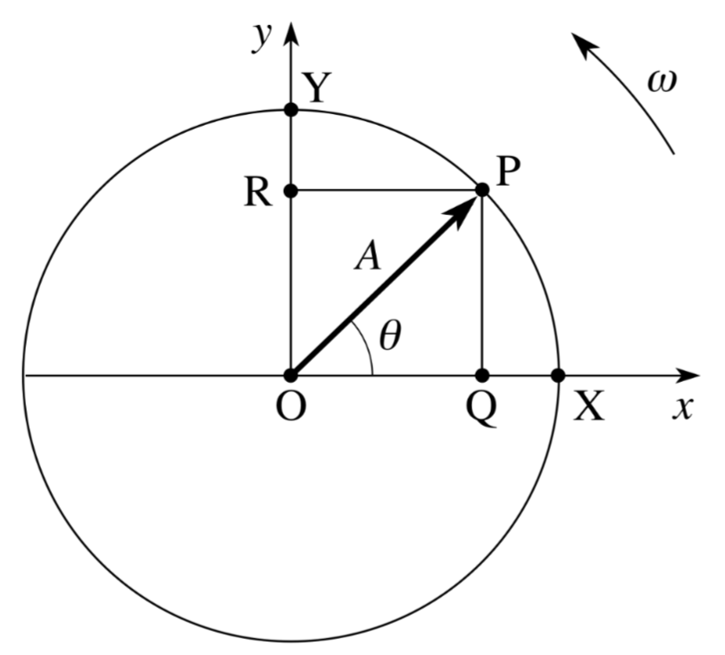
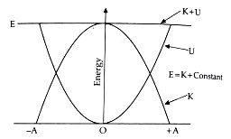
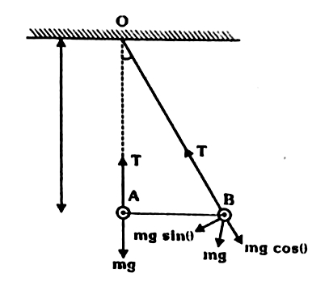

जब कोई पिंड एक निश्चित समय अंतराल के बाद अपनी गति को दोहराता है, तो उसकी गति को आवर्त गति कहते हैं। वह निश्चित समय अंतराल आवर्तकाल कहलाता है।
आवर्त गति दो प्रकार की होती है -
1. अनावर्ती दोलन रहित गति - इसमें पिंड अपनी माध्य स्थिति के इधर-उधर दोलन नहीं करता। जैसे - वृत्तीय गति।
उदाहरण - पृथ्वी की सूर्य के चारों ओर गति।
2. दोलन गति - इसमें पिंड अपनी माध्य स्थिति के इधर-उधर गति करता है। जैसे - सरल आवर्त गति।
उदाहरण - सरल लोलक की गति, स्प्रिंग से बंधे पिंड की गति।
नोट - प्रत्येक दोलन गति आवर्त गति होती है, परन्तु प्रत्येक आवर्त गति दोलन गति नहीं होती।
1. माध्य स्थिति - दोलन करती वस्तु जिस निश्चित बिंदु के इधर-उधर गति करती है, उसे माध्य स्थिति या साम्य स्थिति कहते हैं। इस स्थिति में वस्तु पर लगने वाला परिणामी बल शून्य होता है।
2. आयाम - दोलन करते समय माध्य स्थिति से किसी एक ओर वस्तु के अधिकतम विस्थापन को आयाम कहते हैं। इसे $A$ से दर्शाते हैं। यह दोलन की परास बताता है।
3. दोलन - दोलन करती वस्तु का माध्य स्थिति से एक ओर जाना, फिर वापस माध्य स्थिति पर आकर दूसरी ओर जाना और पुनः माध्य स्थिति पर लौट आना, एक दोलन या एक कंपन कहलाता है।
जब कोई कण अपनी माध्य स्थिति के इधर-उधर एक सरल रेखा में ऐसी गति करता है कि उस पर लगने वाला प्रत्यानयन बल सदैव माध्य स्थिति से विस्थापन के अनुक्रमानुपाती हो, तो उसकी गति को सरल आवर्त गति कहते हैं।
अर्थात $F \propto -y$
विशेषताएँ -
1. यह आवर्ती गति है।
2. यह माध्य स्थिति के दोनों ओर होती है।
3. त्वरण विस्थापन के अनुक्रमानुपाती होता है।

माना एक कण $A$ त्रिज्या के वृत्त में एक समान वृत्तीय गति कर रहा है। वृत्तीय गति का प्रक्षेप व्यास पर सरल आवर्त गति करता है।
माना कण $t$ समय बाद माध्य स्थिति से बिन्दु $P$ पर है और $OP$ रेखा $X$-अक्ष से $\theta = \omega t + \phi$ कोण बनाती है।
बिन्दु $P$ से $Y$-अक्ष पर लम्ब $PR$ डालें तो $OR = y$ विस्थापन होगा।
$\triangle OPR$ में -
यही सरल आवर्त गति का विस्थापन समीकरण है।
विशेष स्थितियाँ -
1. माध्य स्थिति पर - माध्य स्थिति पर $y=0$ होता है, अतः -
अर्थात माध्य स्थिति पर विस्थापन न्यूनतम (शून्य) होता है।
2. चरम स्थिति पर - चरम स्थिति पर $y = \pm A$ होता है, अतः -
अर्थात चरम स्थिति पर विस्थापन का परिमाण अधिकतम होता है।
सरल आवर्त गति का विस्थापन समीकरण है -
समय के सापेक्ष अवकलन करने पर वेग प्राप्त होगा -
यही सरल आवर्त गति में वेग का सूत्र है।
विशेष स्थितियाँ -
1. माध्य स्थिति पर - माध्य स्थिति पर $y=0$ होता है, अतः -
अर्थात माध्य स्थिति पर वेग अधिकतम होता है।
2. चरम स्थिति पर - चरम स्थिति पर $y = \pm A$ होता है, अतः -
अर्थात चरम स्थिति पर वेग न्यूनतम (शून्य) होता है।
त्वरण - वेग परिवर्तन की दर को त्वरण कहते हैं।
सरल आवर्त गति में वेग का समीकरण है -
समय $t$ के सापेक्ष अवकलन करने पर -
हम जानते हैं कि $y = A \sin(\omega t + \phi)$
यही त्वरण का व्यंजक है। यहाँ ऋणात्मक चिन्ह दर्शाता है कि त्वरण की दिशा सदैव विस्थापन के विपरीत अर्थात माध्य स्थिति की ओर होती है।
विशेष स्थितियाँ -
1. माध्य स्थिति पर - माध्य स्थिति पर $y=0$ होता है, अतः -
अर्थात माध्य स्थिति पर त्वरण न्यूनतम (शून्य) होता है।
2. चरम स्थिति पर - चरम स्थिति पर $y = \pm A$ होता है, अतः -
अर्थात चरम स्थिति पर त्वरण का परिमाण अधिकतम होता है।
गतिज ऊर्जा - किसी वस्तु में उसकी गति के कारण जो ऊर्जा निहित होती है, उसे गतिज ऊर्जा कहते हैं।
SHM में वेग का सूत्र -
अतः SHM में गतिज ऊर्जा निम्न होगी।-
माध्य स्थिति पर $y=0$ अतः $K_{max} = \frac{1}{2} m \omega^2 A^2$
चरम स्थिति पर $y=A$ अतः $K_{min} = 0$
स्थितिज ऊर्जा - SHM में किसी वस्तु को $y$ विस्थापन तक जाने में किया गया कार्य ही स्थितिज ऊर्जा होती है।
SHM में प्रत्यानयन बल होता है।
$F = -m\omega^2 y$
अतः SHM स्थितिज ऊर्जा निम्न होगी।
माध्य स्थिति पर $y=0$ अतः $U_{min} = 0$
चरम स्थिति पर $y=A$ अतः $U_{max} = \frac{1}{2} m\omega^2 A^2$
कुल ऊर्जा -
चूंकि कुल ऊर्जा विस्थापन $y$ पर निर्भर ना करके, केवल आयाम $A$ पर निर्भर करती है। अतः SHM में कुल ऊर्जा संरक्षित रहती है

सरल लोलक - यदि एक भारी बिन्दु द्रव्यमान को एक भारहीन, अवितान्य डोरी से बाँधकर दृढ़ आधार से लटका दिया जाये तो इस समायोजन को सरल लोलक कहते हैं।
सरल लोलक की गति सरल आवर्त गति होती है -

माना $m$ द्रव्यमान का एक गोलक $l$ लम्बाई की डोरी से बिन्दु $O$ से लटका है। साम्य स्थिति में डोरी ऊर्ध्वाधर $OA$ है। जब गोलक को $B$ स्थिति तक $\theta$ कोण से विस्थापित करके छोड़ा जाता है तो इस पर दो बल कार्य करते हैं -
1. डोरी में तनाव $T$ , $BO$ दिशा में
2. भार $mg$ ऊर्ध्वाधर नीचे की ओर
$mg$ को दो घटकों में वियोजित करने पर $mg \cos\theta$ तनाव $T$ के विपरीत संतुलित हो जाता है तथा $mg \sin\theta$ प्रत्यानयन बल के रूप में कार्य करता है।
यदि कोण $\theta$ बहुत छोटा हो तो $\sin\theta \approx \theta$
अब न्यूटन के द्वितीय नियम से त्वरण -
चूँकि $\frac{g}{l}$ एक नियतांक है, अतः -
अर्थात त्वरण विस्थापन के अनुक्रमानुपाती है तथा दिशा विस्थापन के विपरीत है। यही सरल आवर्त गति की शर्त है।
अतः सिद्ध हुआ कि छोटे आयाम के लिए सरल लोलक की गति सरल आवर्त गति होती है।
दोलनकाल - सरल लोलक को एक दोलन पूरा करने में लगे समय को उसका दोलनकाल कहते हैं। इसे T से प्रदर्शित करते हैं।
व्यंजक -
सरल लोलक का त्वरण समीकरण निम्न होताहै।
चूंकि सरल लोकल की गति SHM होती है। अतः SHM के लिए -
दोनों समीकरणों की तुलना करने पर -
अतः सरल लोकल का दोलनकाल
$T = \frac{2\pi}{\omega}$
यही सरल लोलक के आवर्तकाल का सूत्र है।
सरल लोलक का आवर्तकाल $T = 2\pi \sqrt{\frac{l}{g}}$ होता है, इससे निम्न नियम प्राप्त होते हैं -
1. लम्बाई का नियम - सरल लोलक का आवर्तकाल उसकी प्रभावी लम्बाई के वर्गमूल के अनुक्रमानुपाती होता है।
2. गुरुत्वीय त्वरण का नियम - सरल लोलक का आवर्तकाल गुरुत्वीय त्वरण के वर्गमूल के व्युत्क्रमानुपाती होता है।
3. द्रव्यमान का नियम - सरल लोलक का आवर्तकाल उसके गोलक के द्रव्यमान पर निर्भर नहीं करता है।
4. आयाम का नियम (समकालत्व का नियम) - यदि आयाम छोटा है $(< 4^\circ)$ तो आवर्तकाल आयाम पर निर्भर नहीं करता है। छोटे आयाम के सभी दोलन समकालिक होते हैं।
सरल लोलक का आवर्तकाल $T = 2\pi \sqrt{\frac{l}{g}}$ होता है।
1. $T \propto \sqrt{l}$ - लम्बाई बढ़ने पर आवर्तकाल बढ़ता है, घटने पर घटता है।
2. $T \propto \frac{1}{\sqrt{g}}$ - $g$ बढ़ने पर आवर्तकाल घटता है, $g$ घटने पर बढ़ता है।
पहाड़ पर ऊँचाई बढ़ने से तथा खदान में गहराई बढ़ने से $g$ का मान घटता है।
चूँकि $T = 2\pi \sqrt{\frac{l}{g}}$ अर्थात $T \propto \frac{1}{\sqrt{g}}$
अतः $g$ घटने से $T$ बढ़ जायेगा। लोलक सुस्त हो जायेगा।
गर्मी में ताप बढ़ने से डोरी की लम्बाई बढ़ जाती है।
चूँकि $T \propto \sqrt{l}$ अतः लम्बाई बढ़ने से $T$ बढ़ जाता है, घड़ी सुस्त हो जाती है।
सर्दी में ताप घटने से लम्बाई घट जाती है, अतः $T$ घट जाता है, घड़ी तेज हो जाती है।
दिया है $g_m = \frac{g_e}{6}$
अर्थात चन्द्रमा पर आवर्तकाल 2.45 गुना बढ़ जायेगा।
लिफ्ट में प्रभावी गुरुत्वीय त्वरण $g' = g \pm a$ हो जाता है।
(i) लिफ्ट ऊपर जाये - $g' = g + a$
(ii) लिफ्ट नीचे आये - $g' = g - a$
(iii) लिफ्ट मुक्त रूप से गिरे - $g' = 0$
1. मुक्त दोलन - जब किसी दोलन करने वाले पिंड को उसकी साम्य स्थिति से विस्थापित करके छोड़ दिया जाता है, तो वह अपनी स्वाभाविक आवृत्ति से नियत आयाम और नियत आवर्तकाल से दोलन करता है। इसे मुक्त दोलन कहते हैं।
उदाहरण - सरल लोलक के दोलन (वायु के प्रतिरोध को नगण्य मानने पर)।
2. अवमंदित दोलन - जब दोलन करने वाले पिंड पर माध्यम के श्यान बल या घर्षण बल कार्य करता है, तो प्रत्येक दोलन में उसकी ऊर्जा का ह्रास होता है। इससे उसका आयाम धीरे-धीरे घटता जाता है और अंत में शून्य हो जाता है। ऐसे दोलन को अवमंदित दोलन कहते हैं।
उदाहरण - वायु में सरल लोलक के दोलन।
3. प्रणोदित दोलन - जब किसी पिंड पर बाहर से कोई आवर्त बाह्य बल लगाया जाता है, तो पिंड उस बाह्य बल की आवृत्ति से दोलन करने लगता है। ऐसे दोलन को प्रणोदित दोलन कहते हैं। इसमें आयाम नियत रहता है पर बाह्य बल की आवृत्ति से होता है।
उदाहरण - झूले पर बैठे बच्चे को बाहर से धक्का देना।